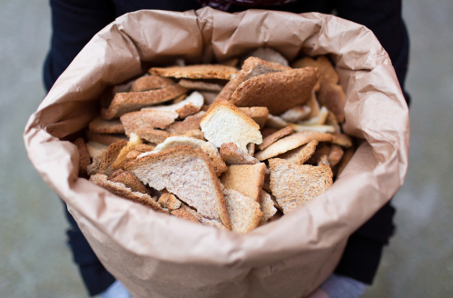
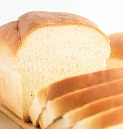
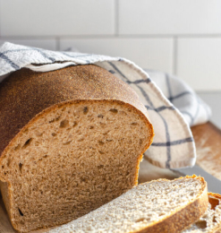
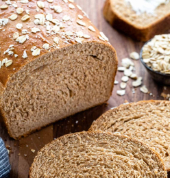
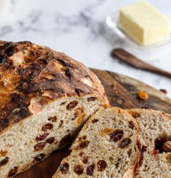
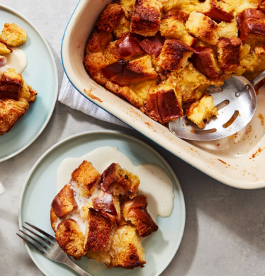

About Us
Bread is one of the most wasted food in the world. As a simple, cheap, and adaptable type of food, many people see it as essential. It always sells in the big loaf, yet, comes with short shelf life, which easily creates waste.
bread waste
Bread is one of the most wasted food in the world. As a simple, cheap, and adaptable type of food, many people see it as essential. It always sells in the big loaf, yet, comes with short shelf life, which easily creates waste.

Tyoe of Bread
Beads types can be described and named from different angles. They could be categorised based on such criteria:

White Bread

Whole Wheat Bread

Rye, Sourdough & Pumpernickel

Wholegrain & Sprouted grain breads

Raisin & Fruit breads
Trending Recipes


119 reviews
Better Bread Pudding
By GENEVIEVE YAM 2 reviews119 reviews